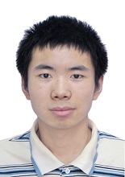

|  |
Hu Wan
Curriculum Vitae WanHu [at] CNU.EDU.CN M.S. Student College of Information Engineering Capital Normal University Address: Room 8-201, East Main Building, Tsinghua University, Beijing, China |
|
Visiting Student, Storage Research Group,
Tsinghua University Supervisor: Prof. Jiwu Shu, R.A. Youyou Lu |
Jul. 2015 – Present | |
|
M.S. Student, College of Information Engineering,
Capital Normal University Advisor: Asst Prof. Yuanchao Xu |
Sep. 2014 – Present
|
|
|
R & D Intern, Architecture of Micro-System Lab,
Institue of Computing Technology, CAS Mentor: Prof. Dongrui Fan |
Sep. 2013 – Aug. 2014 | |
| B. Eng., College of Information Engineering,
Capital Normal University Excellent graduate of Capital Normal University |
Sep. 2009 – Jul. 2013 |